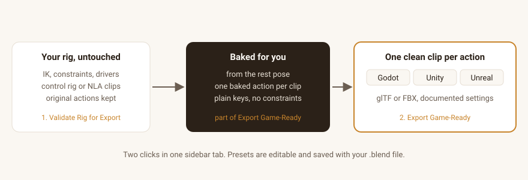
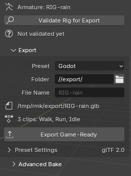
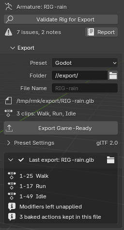
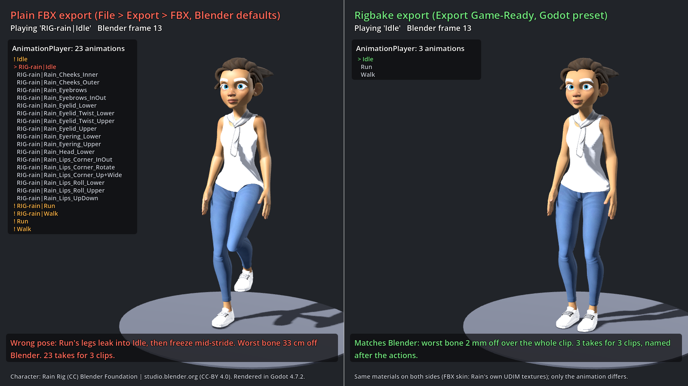
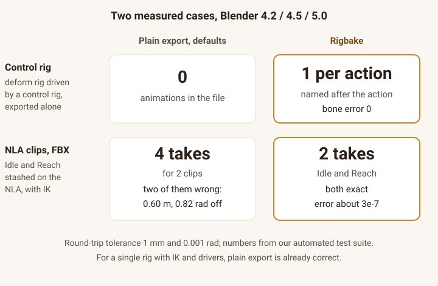

Rigbake for Blender
Control rig or NLA clips? Blender's default export can come out empty or with wrong, duplicated takes. Rigbake exports one clean, correctly named clip per action, with ready settings for Godot, Unity, and Unreal. Your original actions are never touched.
$19, one-time, source included (GPL-3.0-or-later). For Blender 4.2 LTS to 5.0 (tested).
Not on sale yet. The button opens an email to support@ochrestack.com; we write back once, when it is, and keep no list. Documentation and install steps

- Validate Rig for Export checks the rig. Your rig and its actions are not changed.
- Export Game-Ready bakes each clip from the rest pose into plain keys and writes one clean clip per action, as glTF (Godot) or FBX (Unity, Unreal).
What it does
- Export Game-Ready. Bakes every bone constraint and driver into plain keys, one new action per clip, from the rest pose, and exports through Blender's own glTF and FBX exporters with documented presets for Godot, Unity, and Unreal, editable and saved with your file. Before you click, the panel shows the file and the clips; after, each clip with its frame range and every warning.
- One clip per action. The active action and every action on the NLA each become a clip named after the action, also from a control rig, which Rigbake detects. An action that is neither is named in the panel, with a one-click Add to NLA.
- Validate Rig for Export. What will break on the way to the engine, most damaging first, each with a one-line fix and a Select button; Apply Scale and Limit Weights in one click. What the export handles or what is fine as it is are notes, not issues.
- Your actions and edits are kept. Originals are never modified; a baked action you clean up by hand is kept by the next export.
In Blender, for real
Every image below is a capture from a real Blender 4.2 LTS window with Rigbake 1.2.3 installed, shown at its real size, or a Godot 4.7 render of its files: not a mockup. The character is Rain, the Blender Studio's free production rig (2166 bones, 2788 bone constraints), with an Idle, a Walk and a Run clip on the NLA and her legs in IK. Each image links to the full Blender window.




![The Validate Rig for Export dialog at real size on Rain: '7 issues, 2 notes in RIG-rain'; meshes with more than four bone weights per vertex with Limit Weights and Select buttons, meshes whose modifiers stay unapplied to keep shape keys, two meshes whose Mask modifiers then hide nothing in the engine, vertex groups with no weights or no matching bone, deform bones without weights, each with its fix and a Select button in one column; then a note that her shoes keep their shape keys over an unapplied Subdivision, fine for most games, and one more note in the full report; Close and Open Full Report](img/character-02-validate-popup.png)

Character: Rain Rig (CC) Blender Foundation | studio.blender.org, used under CC BY 4.0. We added the animation clips and simplified two eye materials for the game-engine export. Rain is not included with Rigbake. Rain has no separate control rig; the control-rig case is in "How we tested" below.
Details
- Blender 4.2 LTS to 5.0 (tested), installed as an extension from a zip. Verified in a real Blender 4.2 LTS window and in Godot 4.7. The Unity preset's FBX was checked through Godot's FBX importer. The Unreal preset has not been checked in Unreal Engine. Neither has been opened in Unity or Unreal.
- GPL-3.0-or-later. Full source code included with your purchase.
- No telemetry, no analytics, no network calls of any kind.
- Support: support@ochrestack.com. Bugs and feature requests welcome at the same address.
Documentation
The full manual (README.md) and a one-page quick start ship inside the download. The quick start is also online: Rigbake quick start.
Install
- Download
rigbake-1.2.3.zip. Do not unzip it. - In Blender 4.2 LTS to 5.0 (tested), open Edit > Preferences > Get Extensions.
- Open the drop-down menu (⌄) at the top right, choose Install from Disk... and pick the zip.
- Press N in the 3D Viewport and open the Rigbake tab.
If Get Extensions asks about internet access, Continue Offline is fine: Rigbake needs none. In Godot, set Animation > FPS to your Blender frame rate (Importing into Godot).
Words used on this page
- NLA: Blender's Nonlinear Animation editor, where an armature's clips sit side by side. Stashing an action puts it there as a muted track.
- Take: one named animation inside an FBX file. Godot, Unity and Unreal list one animation per take.
- Control rig: a second armature that the animator keys; the exported deform rig, the one that bends the mesh, follows it through constraints.
Known limits
- Only bone motion is baked. Shape keys and their animation are exported as they are (Godot preset), or dropped with a warning (FBX presets, when the mesh has other modifiers).
- Motion keyed on the armature object itself is not exported; the validator and the export summary warn about it. Put it on a root bone.
- The default exports the active action and every action on the NLA. Other actions of the rig are named in the panel, not exported, until you add them to the NLA.
- Keys are baked on whole frames. One control rig per deform rig. One file per export.
- Blender 4.5's own FBX importer misreads multi-take files; exports from Rigbake are correct, but re-importing them into 4.5 for checking is not reliable. Use 4.2 or 5.0 to verify, or your engine.
How we tested

| Scenario | Plain Blender export | Rigbake |
|---|---|---|
| Deform rig driven by a separate control rig, exported alone | 0 animations (glTF and FBX) | One clip per action, bone error 0 |
| Two clips stashed on the NLA with IK, plain FBX | 4 takes for 2 clips, two of them wrong by 0.60 m / 0.82 rad | 2 takes, both exact |
| Single rig with IK, Copy Rotation, and a driver | Correct already | Correct; validator and presets are the value |
Why the take counts differ. Blender's default FBX export (All Actions and NLA Strips both on) writes each NLA clip twice and adds every other action in the file that fits the rig. Our minimal test rig has no other actions: 4 takes for 2 clips. Rain's file adds 17 face-rig pose actions: 23 takes for 3 clips. Ellie's adds 16 rig pose actions, a camera pose library and a shader action: 24 takes for 3 clips. Rigbake writes one take per clip in each case.
We build each rig in code, export it with Blender's defaults and with Rigbake, re-import the file, and compare every deform bone with the live rig. Round-trip tolerance is 1 mm and 0.001 rad; the measured error on the cases above, and on three more buyer-style rigs, is below 1e-5 m in a Blender re-import. Every number comes from our automated test suite, which runs on Blender 4.2, 4.5, and 5.0.
How exact in Godot. The exported files are exact. Godot's default import re-samples each clip at its Animation > FPS setting, and its import Optimizer can thin keys: on fast motion our every-frame check measured up to 13 cm. With Animation > FPS set to the Blender frame rate and the AnimationPlayer's Optimizer turned off, every bone matched Blender within 0.0002 m in our check. The quick start shows both settings.